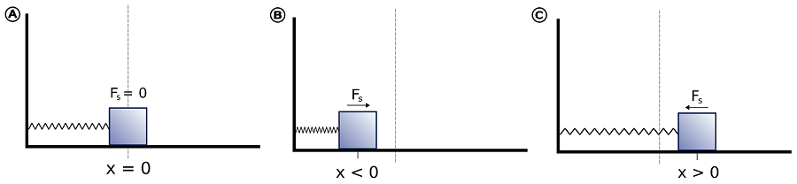

Quantum Oscillators#
What you need to know
In this section we study quantum mechanical version of harmonic oscillator. Harmonic oscillators have ubqiutuous presence in everyday world: beads bound by a spring which vibrate around equilibirum positions. Turns out beads on a pring is remarkably common in microsocpic world as nuclie of atoms in solids or molecules are in some sense “quantum beads” vibrating around equilibriu position of “quantum springs”. The distinction between quantum vs classical regimes will again be highly illuminating about the role of quantum effects on small scales. The key topics we will learn are:
Quantization of vibrational degrees of freedom in molecules. This has implication for Infrared and raman spectroscopies, molecular mechancis and condensed matter in general.
Existence of zero point energy and tunneling. We have seen this on PIB example and will see again on the example of harmonic oscillator.
Hermite Polynomials as orthogonal eigenfunctions. This will be our first foray into the world od special functions.
Raising and lower operators as elegant way of solving problems. This will be our first introduction to raising and lowering operators which provide highly elegant way of solving problems in quantum mechanics.
Effects of unharmonicity. We will see the impact on energy levels of harmonic oscillators when one goes beyond harmonic approximation.
Bead, spring and a wall.#
The classical harmonic oscillator is a system of bead attached to a wall with a spring. When bead is displaced from its equilibrium or resting position \(r_0\) to some point \(r\), experiences a restoring force \(F\) proportional to the displacement \(x=r-r_0\):
The above expression is also known as Hooke’s law, where minus sign indicates that the direction of force is always towards restoring equilibrium location. The constant k characterizes stiffness of the spring and is called spring constant.


Solving harmonic oscillator problem#
The classical equation of motion for a one-dimensional simple harmonic oscillator with a particle of mass mm attached to a spring having spring constant kk is
whwhere we have intorduced constant \(\omega\) which we will see is the frequency oscillations:
The differneital equation is a simple second order, linear ODE which can be solved by a standard trick of pluggin exponential \(x(t)=e^{\alpha t}\) and convertin the problem to algebraic equation. The solution is
Where the two constnants are: \(A\) the amplitude of oscillations and \(\phi\) is constant specifying the initial position of the bead.
Conservative system#
In the simple harmonic oscillator problem \(F\) is the only force acting on the system. We way that the system is conservative becasue the kinetic and potential energies keep being interconverted with no amount of total energy being of the system being dissipated into the environment. This will be true in a vaccuum where there is no friction. For a simple harmonic oscillatorthe oscillations go on forever with position \(x(t)\) velocity \(v=\dot{x}(t)\) and acceleration \(a=\ddot{x(t)}\) with same constant frequency \(\omega\) but with different amplitudes.
## Energy of the harmonic oscillatorIn classical mechanics the force and the potential energy of a conservative system are related via the formula:
This means the steeper the potential the higher the force and minus sign indicates that force is restoring the equilibrium position. The potential energy can be obtained by integrating:
Thus the potential energy for a simple harmoncin oscillator is a parabolic function of displacement. It is convenient to set \(C=0\) and measure potential energy relative to equilibrium state \(V(x=0)=0\)
Conservation of total energy#
Kinetic energy is the familiar expression expressed either via momentum \(p=mv\) or velocity \(v=\dot{x}\)
Note that while both kinetic and potential energies oscilate over time, the total energy remains constant:
Diatomic molecule and two-body problem#

Equations of motion for diatomic molecule modeled as beads bound by a spring are:
Where \(F_1=-F_2\) which is a reflection of Newtno’s thrid law. By introducing a more convenient cooridnates in the from of relative distance \(x\) and center of mass \(x_{com}\) we are now going to reduce the two body problem to one body problem.
Effective mass of vibration#
By expressing equations of motion in terms of the center of mass which, we find that center of mass moves freely without acceleration.
Next by taking difference between coordinates \(\ddot{x_2}=-\frac{k}{m_2}x_2\) and \(\ddot{x_1}=\frac{k}{m_1}x_1\)we expres the equations of motion in terms of relative distance
This equation looks identical to the probel of bead anchored to wall with a spring. We have thus managed to reduce the two body probelm to a one modey problem by replacing masses of bodies with a reduced mass: \(\mu=\frac{1}{m_1}+\frac{1}{m_2}=\frac{m_1 m_2}{m_1+m_2}\)
Beads and springs model of molecules#
Before discussing the harmonic oscillator approximation let us reflect on when this would be a good approximation and uner which cirumstances it will break down?
For an aribtarry potential energy funciton of x we can carry out Taylor’s expansion around equilibrium bond length \(x_0\) obtaining infinitey series.
Setting energy scale to be relative to \(U(x_0)=0\) and recongizing that first derivative vanishes at minima \(x_0\) we have
Hence we see that the Harmonic approximation is only the first non vanishing term! Furthermore we see that spring constant k and subsequent anharmonicity consnats such as \(\gamma\) are higher order derivatives of potential energy. That is the more non-linear the potential the higer the contribution of these terms. And vice verse clsoer the potential to quadratic form the more accurate is the harmonic assumtion.
Qunatum mechanical harmonic oscillator problem#
Quantum mechanical harmonic oscillator is defined by its Hamitlon operator
As with the particle in a box system our objective is to find eigenfunctions and eigenvalues which are the observable states and energy values in the experiment.
What we have is ODE but with non-constant coefficients! What this means is we can not use our exponential trick to quickly solve the problem via an algebraic equation. We will, however be able to solve it via an elegant opeator technique.
Vibrational energy is quantized#
Particle in a box syste, showed that translational energy is quantized becasue of the boundary conditions imposed by the box.
Similarly we find that that for harmonic oscillator system the virbational enegy is also quantized where the role of boundary is played by the potential keeping the system bound and wave functions decaying to zero. Similiar to particle in a box there is an infinitely high energy barrier appearing at large displacement \(V(+\infty)=V(-\infty)=+\infty\)!
The eigenvalues of harmonic oscillator are:
Note also that quantum number starts from zero! The zero point energy is \(E_0=\hbar\omega/2\) where angular frequency \(\omega=2\pi \nu\) is defined in terms of spring constant \(\omega=\Big(\frac{k}{\mu}\Big)^{1/2}\)
Harmonic oscillator model predics constant energy spacings!
The frequency of photon that takes harmonic oscillator from one to next level is equal to the frequency (classical) nuclear vibration!
Eigenfunctions of harmonic oscillator#

Probability distribution shows tunneling and quantum-classical transition.#

Selection rule#
In physics and chemistry, a selection rule, or transition rule, formally constrains the possible transitions of a system from one quantum state to another. Selection rules have been derived for electromagnetic transitions in molecules, in atoms, in atomic nuclei, and so on. The selection rules may differ according to the technique used to observe the transition:
This integral represents the the probability of the transition between states; therefore if the value of this integral is zero the transition is forbidden. In practice, the integral itself does not need to be calculated to determine a selection rule. It is sufficient to determine the symmetry of transition moment function.
Using recusion relation of hermite polynomials one can establish that only transiitons which satsify
can occur within harmonic oscillator approximation. Furthermore only those modes are observed in IR for which dipole moment changes with vibrational coordinates.
Unharmonic correction of harmonic oscillator#
Harmonic oscillator is an approximation valid when vibrations are confined to the vicinity of equilibrium bond. For larger vibrations unharonic effects (next terms in taylro expansion) become important. $\( \tilde{E}_{v} =\omega_e (v+1/2)- x_e\omega_e(v+1/2)^2 \)$
A correction accounting for unharmonic effects is introuced which softens the change in energy with increasing vibrational level v. That is harmonic oscillator is overestimating energy levels and predicts no bond breaking. The \(\omega_e\) and \(x_e\) are unharmonicity constants which are determiend empriically by fitting spectral data to the funcitonal form above. The \(x_e<<<1\) indicating the relative contirbution of two terms.
In unharmonic socillator model the transitions between non-adjacent levels are possible, although given smallness of \(x_e\) they occur with less intensity
Transion \(0\rightarrow 1\) is called fundamental \(0\rightarrow 2\) first overtone, \(0\rightarrow 3\) second overtone and so on.
Vibrational degrees of freedom#
Any non-linear molecule with N atoms has 3N degrees of freedom out of which 3 are translation of center of mass 3 are rotationa around x,y,z axis and the remaining are 3N-6 corrrespdond to internal vobrational motions. Below is an example of rotional and vibrational degrees of freedom for water molecule.

For linear molecule we lose one roatational mode (rotation around molecular axis) and as a result have 3N-5 vibrational modes:

IR spectrum vs Raman spectrum#

Applications: IR spectra#

Applications: 2D IR spectroscopy#

Application of IR to biochemistry-3: Normal modes of proteins#
Normal modes of large biomolecules like proteins contain important information about functional dynamics. Oftentimes by looking at the slowest modes of proteins one may identify motions that faciltiate ligand binding, catalysis, allostery etc. These motions are often generated in classical molecular dynamics simulations

Solving harmonic oscillator porblem via ladder operators.#
Eigenfunctions and eigenvalues of harmonic oscillator can be found via a rather elegant operator technique. The basic idea is to factor the quadratic operator expressions in the hamiltonian into product of two operators that we call \(a^{+}\) and \(\hat{a}^{-}\). These two operators turn out to have a neat property of kicking eigenfunctions up and down to the adjacent eigenfunctions. These are known as ladder operators or raising and lowering operators or sometimes also called more dramatic names like creation and destruction operators. The facotrization is shown below:
Where we have introduced a convenient dimensionless momentum and position operators:
\(\hat{p}=(\mu \hbar \omega)^{-1/2}\hat{P}\)
\(\hat{x}=(\mu \omega/\hbar)^{1/2}\hat{X}\).
And expressed hamitlonain in terms of ladder operators:
- \[\hat{a}^{+}=\frac{1}{\sqrt{2}}(\hat{x}+i\hat{p})\]
- \[\hat{a}^{-}=\frac{1}{\sqrt{2}}(\hat{x}-i\hat{p})\]
- \[\hat{n}=\hat{a}^{+}\hat{a}\]
The \(\hat{n}\) is called a number operators and the fact that hamitlonain is defined via number operators we expect it to satisfy eigenfunction eigenvalue relation \(\hat{n}\mid n\rangle=n\mid n\rangle\) with n being eigenvalues to be determined.
Notice also that the ladder operators are complex conjugate of each other \(\hat{a}^*= \hat{a}^{+}\)!
Raising and lowering of eignefunctions#
Knowing commutators of raising and lowering oeprators allows us to reveal their action on eigenfunctions:
\([a^{+},a] = -1\), \([\hat{n},\hat{a}] = -a \), \([\hat{n},\hat{a}^{+}] = a^{+}\)
Now let us prove to improtant properties of ladder oeprators.
\(\hat{a}^{+} \mid n\rangle \sim \mid n+1\rangle\)
\(\hat{a} \mid n\rangle \sim \mid n-1\rangle\)
$\( \hat{n}a\mid n\rangle = (\hat{a}\hat{n}-\hat{a}) \mid n\rangle = (n-1)\hat{a}\mid n\rangle \)$